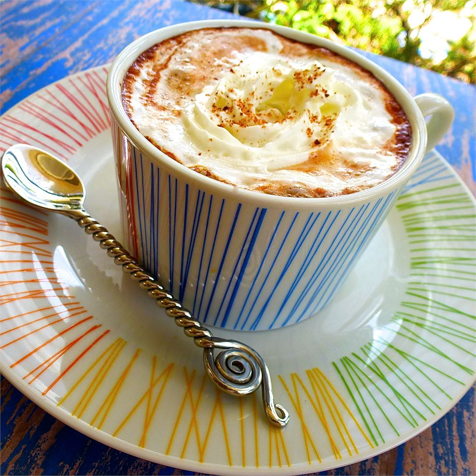

Mocha Coffee
Taken from here
Description

Years ago I worked in a coffee shop that sold this bomb coffee.
It's basically coffee with some mocha powder, maybe try that first.
Ingredients
- 2/3 cup nonfat dry milk powder
- 2/3 cup instant coffee granules
- 1 1/3 cups white sugar
- 1/3 cup unsweetened cocoa powder
- 1 1/2 tsp pumpkin pie spice
- 1/2 tsp ground cinnamon
- 1/4 tsp ground red pepper
Instructions
- Mix all ingredients together
- Store until ready to serve in airtight lidded container
- To serve, stir 1/4 cup mix with 1 cup hot water and stir
Back to home